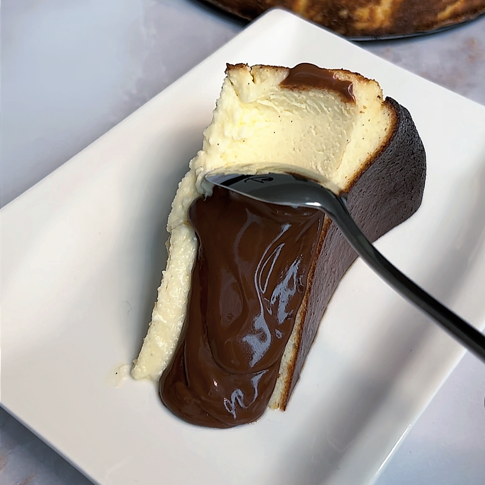

San Sebastian Cheesecake

Description:
As the name suggests, the San Sebastian Cheesecake, originates from San Sebastian in Spain's Basque Country.
It was a San Sebastian-based restaurant called La Viña that served the San Sebastian cheesecake for the first time.
Ingredients:
- 5 eggs
- 1 cup sugar
- 1 kg cream cheese
- 1 tbs vanilla extract
- 1 tbs flour
- 500 ml double cream
- 200gr semi sweet chocolate
Directions:
- Beat the eggs with the sugar and the vanilla extract
- Add the cream cheese to the eggs and sugar mixture then add 300ml of the double cream and finally the flour.
- In the oven at 215 degrees Celcius for 25 minutes then at 230 degrees for another 5 minutes
- Let it cool for a few hours in the fridge.
- Melt the chocolate with the remaining double cream and pour over your cheesecake slice when ready to serve. Enjoy!